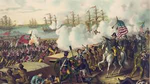
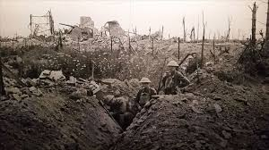
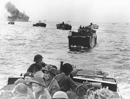
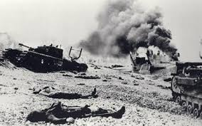
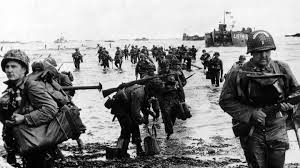

Kanada Tarihçesi
Fransız-Kızılderili Savaşları (1686-1763)
Kuzey Amerika'daki hakimiyet mücadelesinin en önemli çatışması olan bu savaşlar, kıtanın kaderini belirledi.
Savaşın Nedenleri:
- Fransa ve İngiltere arasındaki sömürge rekabeti
- Ohio Vadisi üzerindeki hakimiyet mücadelesi
- Yerli kabilelerin toprak hakları anlaşmazlıkları
Taraflar:
- Fransa ve Huron Kabileleri İttifakı
- İngiltere ve Iroquois Konfederasyonu İttifakı
Sonuç:
- 1763 Paris Antlaşması ile Yeni Fransa İngiliz kontrolüne geçti
- Fransız kültürel hakları garanti altına alındı
- Kuzey Amerika'daki güç dengesi değişti
1812 Savaşı

ABD'nin Kanada topraklarını ele geçirme girişimi olan bu savaş, Kanada'nın ulusal kimliğinin oluşmasında büyük rol oynadı.
Önemli Muharebeler:
- Queenston Heights (13 Ekim 1812): Kanada'nın kritik zaferi
- York'un Yakılması (27 Nisan 1813): Toronto'nun önceki adı olan York'un tahribi
- Lundy's Lane (25 Temmuz 1814): En kanlı muharebe
Sonuçlar:
- Savaş öncesi sınırlar korundu
- Kanada'nın savunma başarısı ulusal gurur kaynağı oldu
- ABD-Kanada sınırı silahsızlandırıldı
Birinci Dünya Savaşı (1914-1918)
Genel Katılım:
- 600.000'den fazla Kanadalı asker katıldı (nüfusun %8'i)
- 66.000 ölü, 170.000 yaralı
Vimy Ridge Muharebesi (9-12 Nisan 1917):
- Dört Kanada tümeni ilk kez birlikte savaştı
- Fransız ve İngilizlerin alamadığı stratejik tepe ele geçirildi
- Kanada'nın "ulus olarak doğuşu" kabul edilir
Diğer Önemli Muharebeler:
- 2. Ypres (1915): İlk zehirli gaz saldırısına karşı direniş
- Somme (1916): 24.000 kayıp verilen büyük muharebe
- Passchendaele (1917): Çamur içinde geçen zorlu savaş


İkinci Dünya Savaşı (1939-1945)
Savaşa Giriş:
- 10 Eylül 1939'da bağımsız kararla savaş ilan edildi
- 1.1 milyon Kanadalı asker görev aldı
Önemli Operasyonlar:
- Dieppe Baskını (19 Ağustos 1942):
- 5.000 Kanadalıdan 3.367'si kayıp
- Normandiya çıkarması için önemli dersler çıkarıldı



Modern Dönem Çatışmaları
Kore Savaşı (1950-1953):
- 26.000 Kanadalı asker katıldı
- 516 şehit, 1.200'den fazla yaralı
- Kapyong Muharebesi'nde önemli başarı
Barışı Koruma Misyonları:
- Mısır (1956): Sina'da ilk BM barış gücü
- Kıbrıs (1964-1993): 29 yıllık barış görevi
- Balkanlar (1990'lar): Bosna ve Kosova
Afganistan (2001-2014):
- 13 yıl süren en uzun Kanada savaşı
- 158 asker ve 1 sivil kaybı
- Kandahar'da güvenlik ve kalkınma görevi